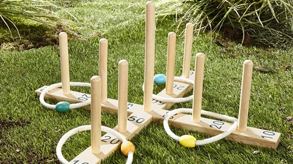

Kumaş paraşüt oyunları
Kumaş paraşüt ile oyuna hareket gelsin. Bu oyun hem çocuklar hem de yetişkinler için birçok farklı oyun çeşidi sunar. Büyük avantajı: Kimse kaybetmiyor ya da kenarda durması gerekmiyor, herkes katılabiliyor. 3 oyun fikri hazırladık: "Çak", "Sapan" ve "Balıkçı Ağı".
Bir klasik: Halka atma oyunu

Oyun kuralları: Her oyuncu arka arkaya 5 atış yapar, atış 5 metre mesafeden yapılır. Hedef olarak sabit bir puan belirlenebilir. Puanı toplayan kişi kazanır.
Zor alternatif: Puana (örneğin 100) tam ulaşmak gerekir. Örneğin oyuncu puan durumu 90 iken örneğin 20 puanlık bir atış yaparsa bu puan (= 110) eklenmez, puandan (=70) düşülür.
Bir başka oyun şeklinde puanları artırarak (yani önce 10, sonra 20, sonra 50, sonra yine 10 puan vs.) ulaşmak gerekmekte. Başka puanlı atışlar geçersiz sayılıyor.
En büyük sabun köpüğünü kim yapabilecek?
Sabun köpüğü oyunları nesillerden beri en eğlenceli dış mekan oyunlarından biridir. Bu büyük eğlence için çok şeye ihtiyacınız yok:
Özel plastik halkalarla ve el yapımı sabunlu su ile hemen başlayabilirsiniz. En büyük sabun köpükleri 2 çubukla tutulan sabun köpüğü ipini sabunlu sudan geçirerek oluşur. Tüm bahçe partilerinin sevilen oyunu!
Basamaklı Golf: İyi hedefleme kazanmanın yarısıdır
"Basamaklı Golf " olarak bilinen dış mekan oyununda bir ipe bağlı olan “Bolalar” (fırlatma oyuncakları) borulara atılır. En alt boru 3, orta boru 2 puan ve en üst boru ise 1 puan verir. Her iki takıma 3’er adet bola alır ve sırayla atış yapar. Eğer bir takımın tüm atışlara borulara denk gelirse rakip takım 1 puan kazanır. Yani her takım bir oyunda maksimum 10 puana ulaşabilir.
Yalnızca oyunun sonuna kadar asılan ve aralarda düşmeyen veya rakip oyuncu tarafından “vurulmayan” atışlar sayılır. Oyun bir takım 21 puana ulaşınca biter.